Les Concerts
Vingt ans de scène, de musique et de souvenirs partagés
Le Chœur Icne en concert
Vingt ans de scène, de nos débuts à aujourd'hui — cliquez sur un concert pour voir toutes ses photos
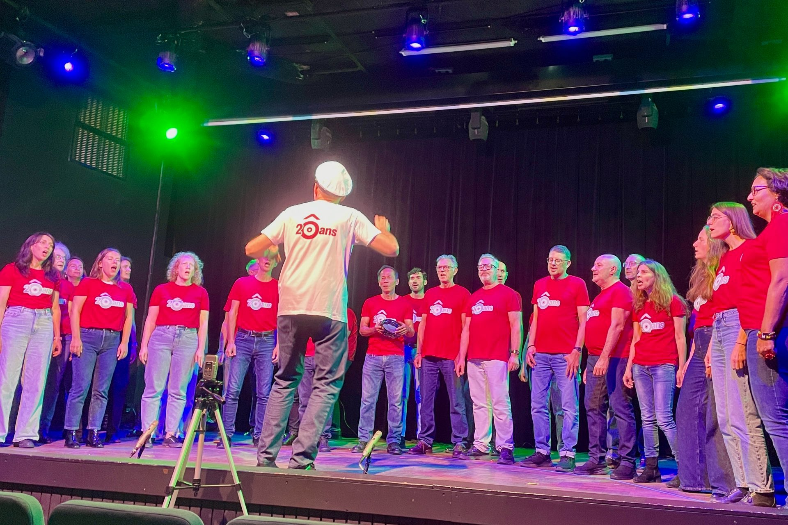
5 photos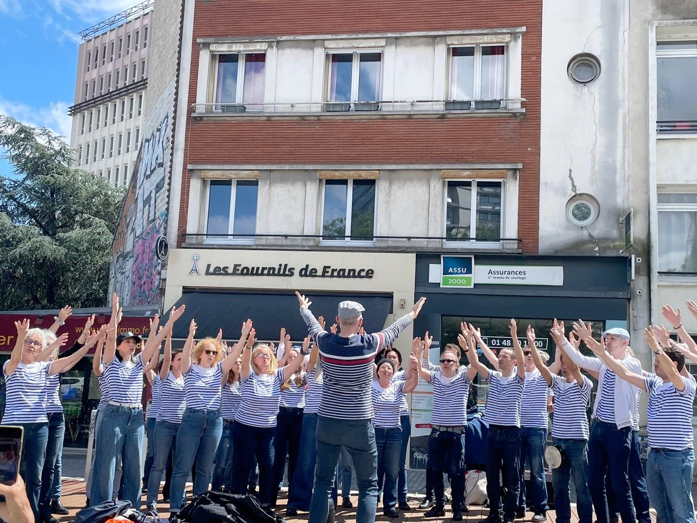
5 photos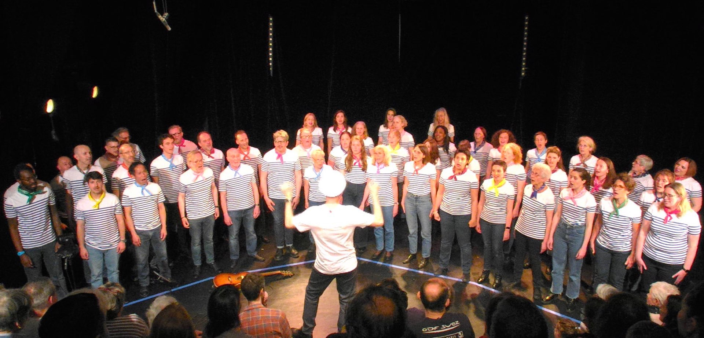
9 photos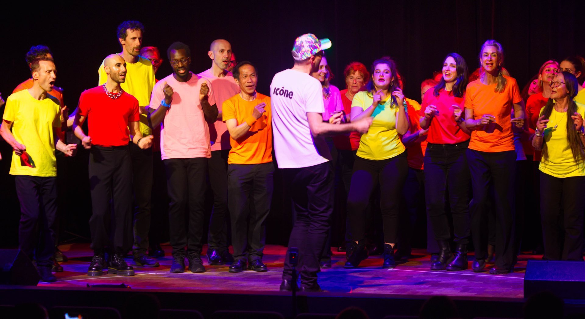
11 photos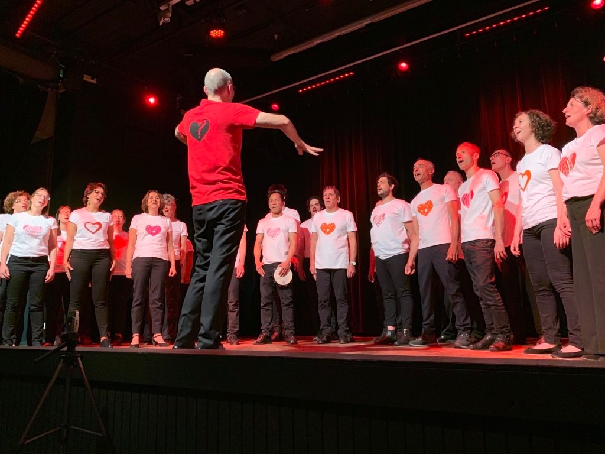
11 photos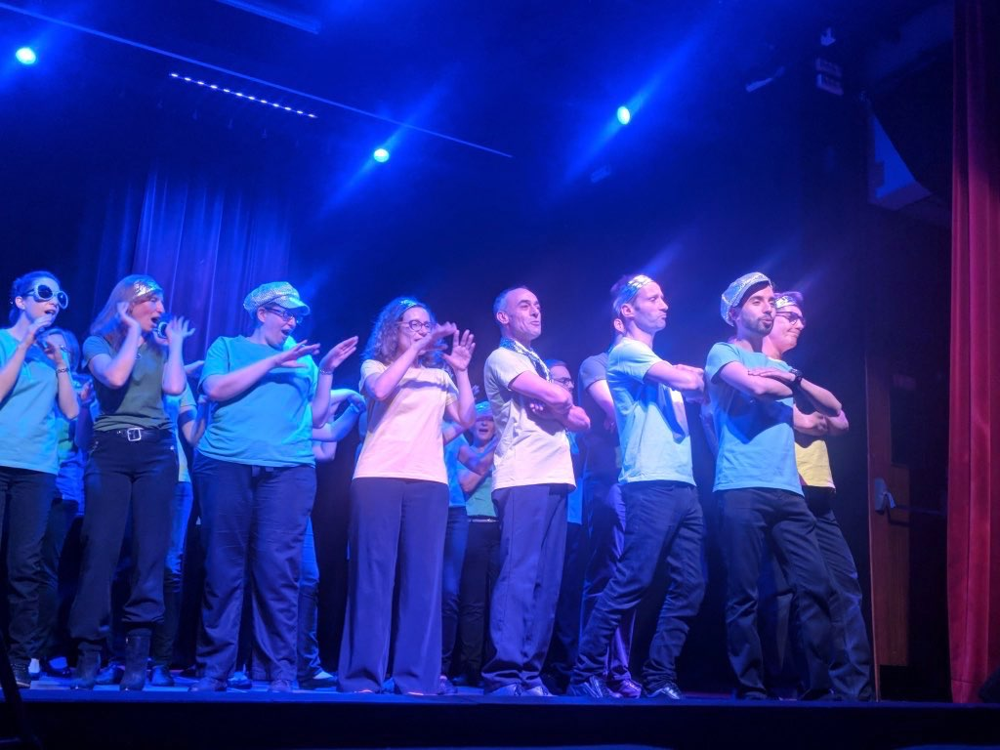
12 photos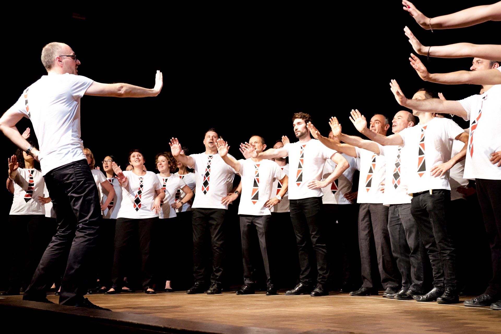
11 photos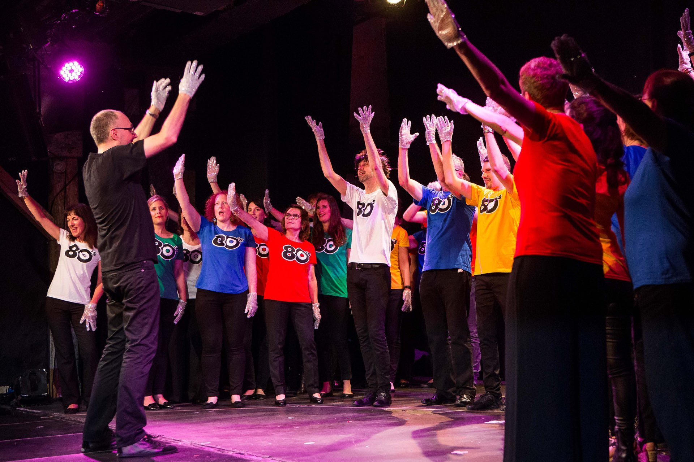
6 photos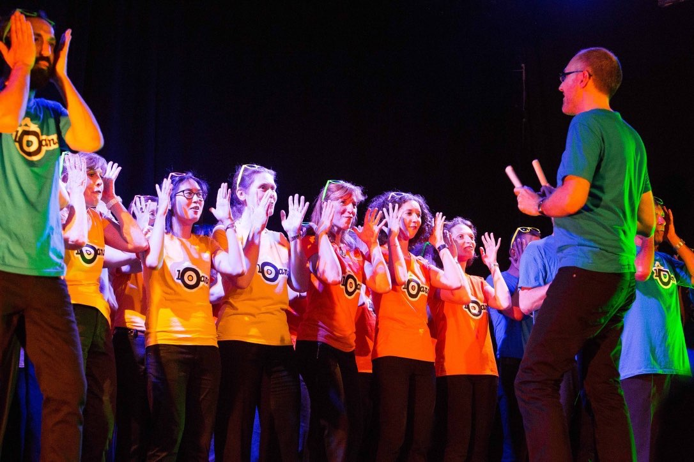
7 photos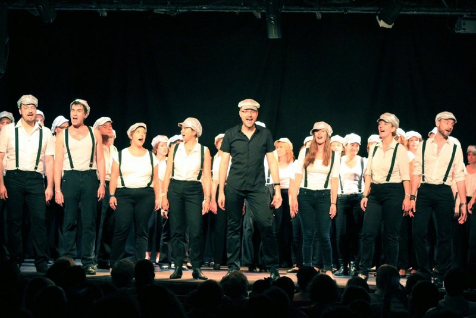
9 photos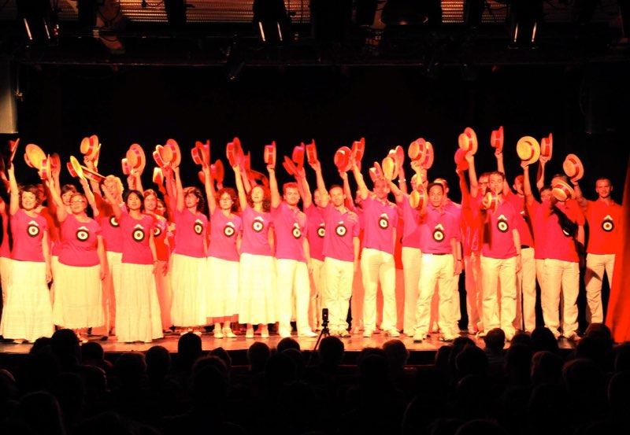
7 photos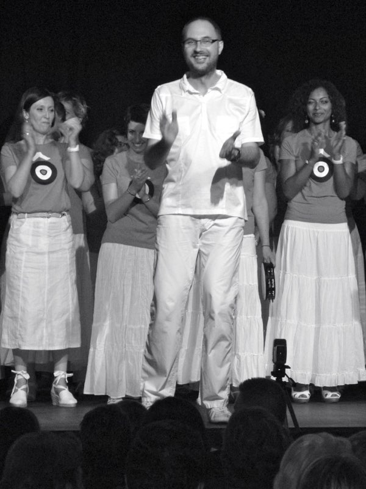
13 photos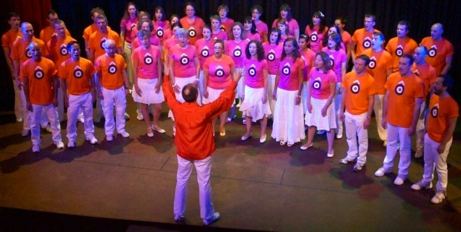
8 photos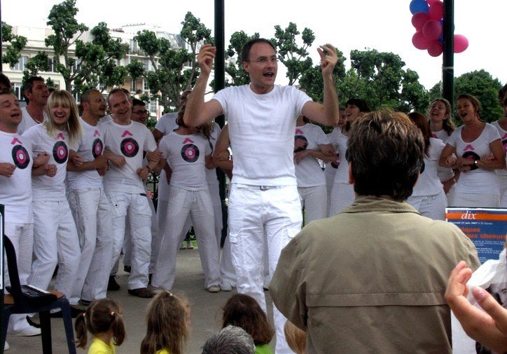
30 photosNos vidéos sur YouTube
Retrouvez tous nos extraits de concerts sur notre chaîne YouTube — des années passées aux dernières prestations.
Voir la chaîne ChoeurIconeQuelques extraits
Un aperçu de nos concerts des années précédentes